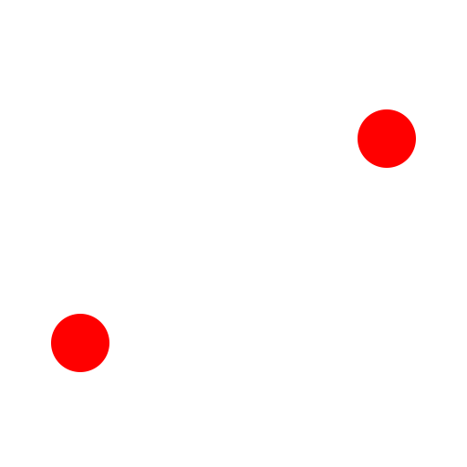

2点間の線分 (L, I)
ツールバー/アイコン:


メニュー: D 描画 > L 線分 > 2点間の線分 (L, I)
コマンド: line | ln | li | l
説明:
このツールで、1線以上の直線を描くことができます。
手順:
- 最初の線分の出発点を指定します。
マウスを使用するか、あるいはコンソールで座標を入力することができます。
- 最初の線分の終了点を指定します。
- 追加の線分の終了点を指定します。
シーケンスを閉じるためにはオプション・ツール・バー中の「閉じる」ボタンをクリックします:

単線セグメントを取消す必要があれば、「アンドゥ」ボタンのクリックにより可能です: